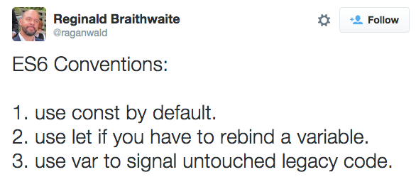
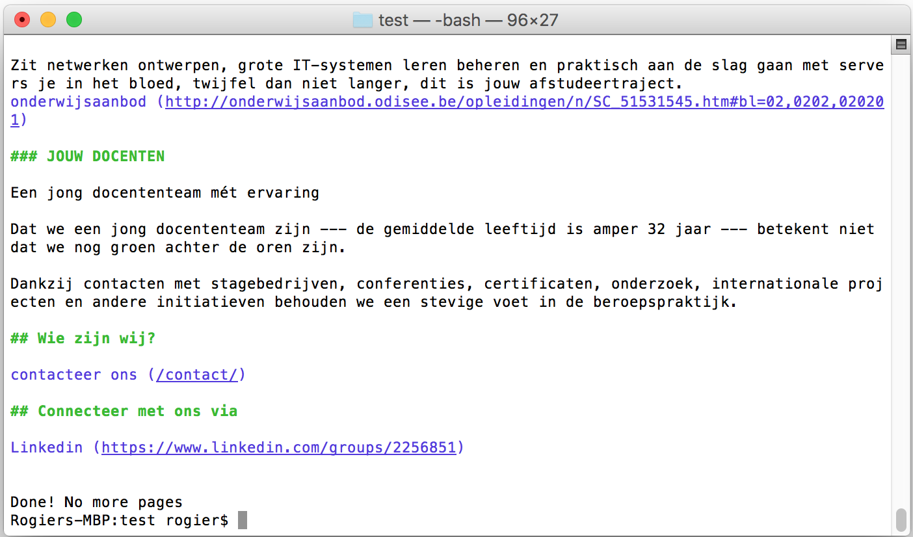
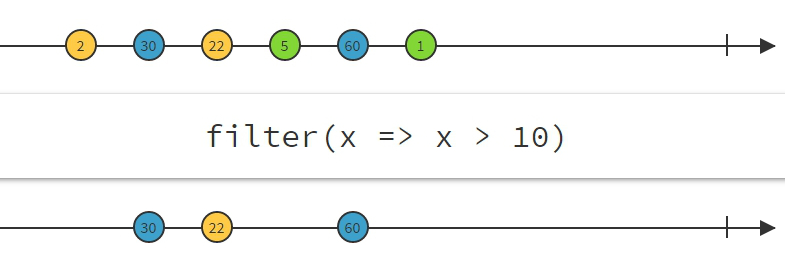

JAVASCRIPT GAMES
use the arrow keys to navigate; press space for slide overviewES6 & beyond
about
ECMAScript 6
- A.K.A. Harmony, A.K.A. ES6, A.K.A. ES2015
- feature-frozen in August 2014
- after a bugfixing period, published as standard on June 17, 2015
-
should be used in strict mode:
'use strict' // rest of ES6 code here
ES.Harmony ECMAScript 6 ES2015
-
future versions will follow the
ES[yyyy]pattern, e.g.ES7ES2016 (so the correct name for ES6 is ES2015) - yearly release; features that don't make it in time, take the next
- reason: pressing browser vendors to implement features quickly
ES2015 & beyond
variables
Var, Let and Const (1)
- scope means where a variable lives
-
the scope of
varis only limited by a function, not by blocks:let x = 1; // x is global for (let y = 0; y < 4; y++) { // y is global let z = 10; // z is global } console.log(x) // 1 console.log(y) // 4 console.log(z) // 10let x = 1; // x is global let test = function() { let y = 2; // y is local }; console.log(x); // 1 console.log(y); // error: y only lives within the function scope
Var, Let and Const (2)
-
the scope of
letis also limited by blocks:let x = 1; // x is global for (let y = 0; y < 4; y++) { // y is local let z = 10; // z is local } console.log(x); // 1 console.log(y); // error! console.log(z); // error!
Var, Let and Const (5)
-
Javascript finally accepts constants:
const text = 'hello'; text = 'goodbye'; // will throw an error -
You can't change the value of a constant, but you can still change its properties:
const person1 = { name: 'Roger', age: 44 }; person1.age = 45; // happy birthday
Var, Let or Const?
Object property shorthand
-
ES5:
let name = 'Bobby', age = 42; let person = {name: name, age: age}; -
ES6:
let name = 'Bobby', age = 42; let person = {name, age}; console.log(person);
Method property shorthand
-
ES5:
let obj = { sayHello: function() { console.log('hello'); }, sum: function(a, b) { return a + b; } }; -
ES6:
let obj = { sayHello() { console.log('hello'); }, sum(a, b) { return a + b; } }; console.log(obj.sum(6, 8)); // 14
...Rest parameter
-
aggregate remaining parameters into a single
...restparameter:let test = function(x, y, ...a) { return (x + y) * a.length; } console.log(test(1, 2, "hello", true, 7)); // 9
...Spread operator (1)
-
spread an array or string into individual elements:
let str = "hello"; let chars = [ ...str ]; // ["h", "e", "l", "l", "o"]let options = ["green", true, 7]; let extendedOptions = [1, 2, ...options]; // [1, 2, "green", true, 7] -
example: easy array concatenation
let arr = [1, 2, ...[3, 4, 5], 6, 7]; console.log(arr);
Destructuring – arrays (1)
-
ES5:
let list = [77, true, 'hello']; let a = list[0]; let b = list[1]; let c = list[2]; -
ES6:
let list = [77, true, 'hello']; let [a, b, c] = list; // array destructuring console.log(a); // 77 console.log(b); // true console.log(c); // 'hello'
Destructuring – arrays (2)
-
default values:
let list = [7, 42]; let [a = 1, b = 2, c = 3, d] = list; console.log(b); // 42 console.log(c); // 3 console.log(d); // undefined
Destructuring – arrays (3)
-
skipping values:
let list = [77, true, 'hello']; let [a, , c] = list; console.log(a); // 77 console.log(c); // 'hello' -
easy value swapping with destructuring:
let [a, b] = [b, a];
Destructuring – arrays (4)
-
return multiple values:
let func = function() { return [1, true, 'hello', {}]; // return multiple values } let [a, , b, ] = func(); console.log(a); // 1 console.log(b); // 'hello'
Destructuring – objects (1)
-
Destructuring an object into variables (shorthand version):
let test = { name: 'Rogier', address: { street: 'Kerkstraat', number: 33 }, age: 42 }; let { name, address } = test; // object destructuring console.log(name); // Rogier console.log(address); // {street: "Kerkstraat", number: 33} console.log(address.number); // 33
Destructuring – objects (2)
-
Explicit variable names & deep matching:
let test = { name: 'Rogier', address: { street: 'Kerkstraat', number: 33 }, age: 42, isMale: true }; let { name: n, address: {street: s}, age: a } = test; // object destructuring console.log(n); // Rogier console.log(s); // 'Kerkstraat' console.log(a); // 42
ES2015 & beyond
functions
Arrow functions
-
shorthand notation for functions (like C# lambda expressions)
// no parameters let sayHello = () => console.log('hello'); sayHello(); // hello// single parameter let double = a => a * 2; console.log(double(4)); // 8// multiple parameters let sum = (a, b) => a + b; console.log(sum(2,4)); // 6
Currying functions
-
is a function that returns a function that returns a function etc...
let highpass = function highpass(cutoff) { return function (n) { return n >= cutoff; }; }; let gt4 = highpass(4); console.log(gt4(6)); // true console.log(gt4(3)); // false -
in ES6:
const highpass = cutoff => n => n >= cutoff; const gt4 = highpass(4); console.log(gt4(6)); // true console.log(gt4(3)); // false
Default parameters
-
ES5:
function f (x, y, z) { if (y === undefined) y = 7; if (z === undefined) z = 42; return x + y + z; }; -
ES6:
function f (x, y = 7, z = 42) { return x + y + z; }
Generator functions (1)
- a generator is a function that can return multiple values
-
each time next() is called, it runs till the next
yieldand pauses:// define a generator let someGenerator = function*(){ yield 'hello'; yield 9; yield true; } // calling the generator returns an iterator object let gen = someGenerator(); // call the next iterator value console.log(gen.next().value); // 'hello' console.log(gen.next().value); // 9 console.log(gen.next().value); // true console.log(gen.next().value); // undefined
Generator functions (2)
-
next()actually returns an object withvalueanddoneprops:let someGenerator = function*(){ yield 'an'; yield 'bob'; } let gen = someGenerator(); console.log(gen.next()); // {value: "an", done: false} console.log(gen.next()); // {value: "bob", done: false} console.log(gen.next()); // {value: undefined, done: true}
yields, which are called one by one by
next()
Generator functions (3)
-
example with parameters:
let counterGenerator = function*(start, step){ let number = start; while(true) { yield number; number += step; } } let gen = counterGenerator(100, 3); console.log(gen.next().value); // 100 console.log(gen.next().value); // 103 console.log(gen.next().value); // 106
Generator functions (4)
-
fibonacci example:
function* fibonacci(n) { const infinite = !n && n !== 0; let current = 0; let next = 1; while (infinite || n--) { yield current; [current, next] = [next, current + next]; } } // oldskool: let fibGenerator = fibonacci(); console.log(fibGenerator.next().value); // 0 console.log(fibGenerator.next().value); // 1 console.log(fibGenerator.next().value); // 1 // generators are iterables, so for...of work, as do spreads: let [...first10] = fibonacci(10); console.log(first10); // [0, 1, 1, 2, 3, 5, 8, 13, 21, 34]
Generator functions (5)
-
you can delegate to another generator with
yield*:function* g1() { yield 2; yield 3; yield 4; } function* g2() { yield 1; yield* g1(); yield 5; } let iterator = g2(); let next = iterator.next(); while(!next.done) { console.log(next.value); // 1 2 3 4 5 next = iterator.next(); } - more in-depth lecture on ponyfoo.com
ES2015 & beyond
collections
for...of (1)
-
Iterates arrays over values instead of over keys:
let arr = ['hello', 111]; let obj = { a: 'bye', b: 222 }; for (let i in arr) { if (!arr.hasOwnProperty(i)) continue; console.log(i); // 0 1 } for (let i of arr) { console.log(i); // hello 111 } for (let i in obj) { if (!obj.hasOwnProperty(i)) continue; console.log(i); // a b } // for (let i of obj) { error! by default, object is not iterable // console.log(i); // } for (let i in obj) { console.log(obj[i]); // bye 222 if (!obj.hasOwnProperty(i)) continue; }
for...of (2)
-
Sidenote: when looping arrays or objects with
for...in, you should usehasOwnProperty()to skip properties inherited from the prototype. Try this fragment:// define prototype method Array.prototype.containsValue = function(obj) { for (let key in this) if (this[key] == obj) return true; return false; } // create array and loop over properties let arr = new Array(); arr['one'] = 1; arr['two'] = 2; arr['three'] = 3; for(let i in arr) { // if (!arr.hasOwnProperty(i)) continue; console.log(i); }
Sets
-
Like arrays, but without double values:
let x = new Set([1, 2, 3, 4, 4, 4, 5]); x.add(6); x.delete(2); console.log('The set contains', x.size, 'elements.'); console.log('The set has 1:', x.has(1)); console.log('The set has 8:', x.has(8)); // iteration for (let value of x) { console.log(value); } -
other methods are
clear(),forEach(),values()
Maps
-
Little bit like objects, but anything can be key:
let x = new Map([ [new Date(), function today () {}], [y => y * 2, { pony: 'foo' }], ['items', [1, 2]] ]); x.delete('items'); x.set('author', 'Rogier'); // iteration for (let [key, value] of x) { console.log(`${key}: ${value}`); } -
other methods are
clear(),forEach(),values(),keys()
WeakSet and WeakMap (1)
-
Same as Set and Map, but with some limitations:
- you can only add objects (weakset) or use objects as keys (weakmap)
- you can't use iteration, so no
size,for...inetc...
-
Main advantage: entry is automatically removed by garbage collector when no more references
exist
let set = new Set(); let weakset = new WeakSet(); (function(){ let a = {x: 12}; let b = {y: 12}; set.add(a); weakset.add(b); })(); // a and b only exist within function console.log(set); // map will contain a until you remove it manually console.log(weakset); // weakmap will contain b until garbage collected
The problem is that objects are only GC'd when every reference has disappeared. Having them lingering around in structures like arrays is one of the main reasons of memory leaks.
You will probably still see b in weakset; the reason is that garbage collection only happens now and then, whenever the browser feels the time is right. Alas, there is no way to force a GC.
WeakSet and WeakMap (2)
- Use weak collections instead of Map and Set whenever you can to prevent memory leaks
-
Typical use cases:
- organise objects in groups (WeakSet)
- keep track of which objects already have been processed (WeakSet)
- extend objects without interfering with garbage collection (WeakMap)
-
Weak collections are about GC, so it doesn't make sense to use object literals as keys:
let weakmap = new WeakMap(); weakmap.set(new Date(), 111); // doesn't make sense weakmap.set({}, 222); // doesn't make sense
Iterators (1)
-
An iterator defines how an object is iterated with
for...in... - It is accessed as the evaluated property [Symbol.iterator]
-
It returns a value
{value: ..., done: ...}let foo = {}; foo[Symbol.iterator] = function() { let items = ['alice', 'bob', 'clive', 'dave']; return { next: function () { return { done: items.length === 0, value: items.shift() } } } }; for (let item of foo) { console.log(item); // alice bob clive dave }
Symbol is a new primitive type introduced in ES2015. They look an awful
lot like Strings, except for a few differences; they are unique, for example. Symbols are mainly
used for iterators and a little funky, so we won't get into them. If you wish, you can read all
about them on ponyfoo.com.
Iterators (2)
-
Shorter syntax:
let foo = { [Symbol.iterator]: () => ({ items: ['alice', 'bob', 'clive', 'dave'], next: function () { return { done: this.items.length === 0, value: this.items.shift() } } }) }; for (let item of foo) { console.log(item); // alice bob clive dave }
Iterators (3)
-
Chipping off a few more characters:
let foo = {}; foo[Symbol.iterator]() { return { items: ['alice', 'bob', 'clive', 'dave'], next: function () { return { done: this.items.length === 0, value: this.items.shift() } } } }; for (let item of foo) { console.log(item); // alice bob clive dave }
Iterators (4)
-
A fibonacci example:
let fibonacci = { [Symbol.iterator]() { let pre = 0, cur = 1; return { next () { [pre, cur] = [cur, pre + cur]; return { done: false, value: cur }; } }; } }; for (let n of fibonacci) { if (n > 1000) break; console.log(n); };
Iterators (5)
-
An example using priorities:
let custom_collection = { elements: [ {val: 111, priority: 1}, {val: 222, priority: 2}, {val: 333, priority: 1}, {val: 444, priority: 3}, {val: 555, priority: 2} ], [Symbol.iterator]: function() { let e = this.elements; let setDone = new WeakSet(); let numReturned = 0; return { next: function() { if (numReturned == e.length) { return { value: undefined, done: true }; } let prior = -1; let retval = undefined; for (let elem of e) { if (setDone.has(elem)) continue; if (elem.priority > prior) { prior = elem.priority; retval = elem; } } numReturned++; setDone.add(retval); return { value: retval.val, done: false }; }, }; } } for(let i of custom_collection) { console.log(i); // 444 222 555 111 333 };
ES2015 & beyond
OO concepts
Class definitions (1)
-
ES5:
let Shape = function (id, x, y) { this.id = id; this.move(x, y) = function (x, y) { this.x = x; this.y = y; }; }; -
ES6:
class Shape { constructor (id, x, y) { this.id = id; this.move(x, y); } move (x, y) { this.x = x; this.y = y; } }; let dot1 = new Shape('dot 1', 25, 50); console.log(`shape ${dot1.id} has position (${dot1.x},${dot1.y})`);
Class definitions (2)
-
Static class members:
class Rectangle { ... static defaultRectangle () { return new Rectangle("default", 0, 0, 100, 100) } } let defRectangle = Rectangle.defaultRectangle();
Inheritance (1)
-
ES5:
let Rectangle = function (id, x, y, width, height) { Shape.call(this, id, x, y); this.width = width; this.height = height; }; Rectangle.prototype = Object.create(Shape.prototype); Rectangle.prototype.constructor = Rectangle; let Circle = function (id, x, y, radius) { Shape.call(this, id, x, y); this.radius = radius; }; Circle.prototype = Object.create(Shape.prototype); Circle.prototype.constructor = Circle;
Inheritance (2)
-
ES6:
class Rectangle extends Shape { constructor (id, x, y, width, height) { super(id, x, y); this.width = width; this.height = height; } } class Circle extends Shape { constructor (id, x, y, radius) { super(id, x, y); this.radius = radius; } }
Modules (1)
-
In ES5, you need namespaces to group functionality
// libs/SomeLibrary/SomeApi.js SomeLibrary = SomeLibrary || {}; SomeLibrary.SomeApi = {}; SomeLibrary.SomeApi.function1 = function () { ... }; SomeLibrary.SomeApi.function2 = function () { ... }; SomeLibrary.SomeApi.var1 = ...; SomeLibrary.SomeApi.var2 = ...; // use in someApp.js let api = SomeLibrary.SomeApi; // use shortcut if you like console.log(api.function2(...)); // use in otherApp.js let api = SomeLibrary.SomeApi; // use shortcut if you like console.log(api.function1(...)); console.log(api.var2);
Modules (2)
-
Proposed syntax in ES6:
// libs/SomeLibrary/SomeApi.js export function1 = function () { ... }; export function2 = function () { ... }; export let var1 = ...; export let var2 = ...; // use in someApp.js import * as api from "libs/SomeLibrary/SomeApi" console.log(api.function2(...)); // use in otherApp.js import {function1 as f1, var2 as v2} from "libs/SomeLibrary/SomeApi" console.log(f1(...)); console.log(v2); - no more namespace pollution
- full syntax see developer.mozilla.org
ES2015 & beyond
internationalization
Collation
-
Collation means sorting order, which differs from country to country:
// in German, "ä" sorts with "a" // in Swedish, "ä" sorts after "z" let list = [ "ä", "a", "z" ]; let deCollator = new Intl.Collator("de"); let svCollator = new Intl.Collator("sv"); console.log(deCollator.compare("ä", "z")); // -1; console.log(svCollator.compare("ä", "z")); // 1; console.log(list.sort(deCollator.compare)) // [ "a", "ä", "z" ]; console.log(list.sort(svCollator.compare)) // [ "a", "z", "ä" ];
Number formatting
-
Localize number formatting:
let beNumberFormat = new Intl.NumberFormat("nl-BE"); let enNumberFormat = new Intl.NumberFormat("en-US"); console.log(beNumberFormat.format(1234567.89)); // 1.234.567,89 console.log(enNumberFormat.format(1234567.89)); // 1,234,567.89
Currency formatting
-
Localize currency formatting:
let usNumberFormat = new Intl.NumberFormat("en-US", { style: "currency", currency: "USD" }); let gbNumberFormat = new Intl.NumberFormat("en-GB", { style: "currency", currency: "GBP" }); let beNumberFormat = new Intl.NumberFormat("nl-BE", { style: "currency", currency: "EUR" }); console.log(usNumberFormat.format(100200300.40)); // $100,200,300.40 console.log(gbNumberFormat.format(100200300.40)); // £100,200,300.40 console.log(beNumberFormat.format(100200300.40)); // 100.200.300,40 €
DateTime formatting
-
Localize date/time formatting:
let beDateTimeFormat = new Intl.DateTimeFormat("de-DE"); let usDateTimeFormat = new Intl.DateTimeFormat("en-US"); console.log(beDateTimeFormat.format(new Date("2015-01-02"))); // 2.1.2015 console.log(usDateTimeFormat.format(new Date("2015-01-02"))); // 1/2/2015
ES2015 & beyond
proxies
proxy (1)
- proxies allow to attach behaviour whenever an object's properties are accessed
-
in its simplest form, it is just a passthrough:
let handler = {} let target = {} let proxy = new Proxy(target, handler) proxy.a = 'Alice' // property set proxy.b = 'Bob' // property set console.log(proxy.a); // property get; identical to target.a console.log(proxy.b); // property get; identical to target.b
proxy (2)
-
with some behaviour attached to
getandset:let handler = { // proxy trap for 'get' get (target, key) { console.info(`Get on property ${key}`); return target[key]; }, // proxy trap for 'set' set (target, key, value) { console.info(`Set on property ${key}`); target[key] = value; return true; } }; let target = {}; let proxy = new Proxy(target, handler) proxy.a = 'Alice'; // property set proxy.b = 'Bob'; // property set console.log(proxy.a); // property get console.log(proxy.b); // property get - full list of possible traps on developer.mozilla.org
proxy (3)
-
proxies allow access control, e.g. make all '_'-prefixed private:
let handler = { get (target, key) { if (key[0] === '_') throw new Error(`Invalid attempt to get private "${key}" property`); console.info(`Get on property ${key}`); return target[key]; }, set (target, key, value) { if (key[0] === '_') throw new Error(`Invalid attempt to set private "${key}" property`); console.info(`Set on property ${key}`); return true; } }; let target = {}; let proxy = new Proxy(target, handler); proxy.a = 'Alice'; proxy.b = 'Bob'; proxy._c = 'Clive';
proxy (4)
-
proxies may also be used for validation schemes:
let handler = { set (target, key, value) { if (key == 'age' && value < 0) throw new Error(`age cannot be negative`); return true; } }; let person = {}; let proxy = new Proxy(person, handler); proxy.age = -1; // throws an error
proxy (5)
-
note that you can still access properties directly:
let handler = { set (target, key, value) { if (key == 'age' && value < 0) throw new Error(`age cannot be negative`); return true; } }; let person = {}; let proxy = new Proxy(person, handler); person.age = -1; // no problem
ES2015 & beyond
promises
promises
-
Solves problems with classic async solutions based on nested callback functions
(
onSucces,onError):- deeper and deeper nesting ('callback hell')
- difficult error management
- not very intuitive (nothing is returned)
- Concept of promises was introduced by DoJo in 2007
- Promises are cool, I promise...
basic promise (1)
[daughter] — "I promise to clean my room today"
[mom] — "Ok. If you do, I'll give you a candy. But if you don't, I'll tell dad about it."
-
// daughter's promise let cleanRoom = new Promise(function (resolve, reject) { if (Math.random() > 0.5) resolve(); // 50% chance that promise is kept else reject(); }) // mom's reactions cleanRoom .then(function() { console.log('well done — here is your candy') }) .catch(function() { console.log('boo — I\'ll have to tell dad') });
basic promise (2)
-
same but with cleaner arrow notations:
// daughter's promise let cleanRoom = new Promise(function (resolve, reject) { if (Math.random() > 0.5) resolve(); // 50% chance that promise is kept else reject(); }) // mom's reactions cleanRoom .then(() => console.log('well done — here is your candy')) .catch(() => console.log('boo — I\'ll have to tell dad'));
basic promise (3)
-
same but with
.then(result => {...}, error => {...})notation:// daughter's promise let cleanRoom = new Promise(function (resolve, reject) { if (Math.random() > 0.5) resolve(); // 50% chance that promise is kept else reject(); }) // mom's reactions cleanRoom.then( () => console.log('well done — here is your candy'), () => console.log('boo — I\'ll have to tell dad') );
basic promise (4)
- a promise, once made, can be kept ('resolved') or failed ('rejected')
-
a possible fail must be caught:
let promise1 = new Promise(function (resolve, reject) { reject(); }); // correct: promise1.catch(() => {}); -
shorter notation for previous example:
Promise.reject(); // correct: Promise.reject().catch(() => console.log('promise rejected'));
basic promise (5)
- a promise can be pending, or resolved / rejected (= settled)
-
a promise can only settle once:
let promise = new Promise(function (resolve, reject) { console.log('pending'); let delay = 6000; // change to 2000 and run again setTimeout(resolve, delay); setTimeout(reject, 3000); }); promise .then(() => console.log('settled (resolved)')) .catch(() => console.log('settled (rejected)'));
passing data
[daughter] — "I promise to clean my room today"
[mom] — "Ok. If you do, you can pick a candy. If not, I want to hear your excuse."
-
// daughter's promise let cleanRoom = new Promise(function (resolve, reject) { // 50% chance that promise is kept if (Math.random() > 0.5) resolve('chocolate bar'); else reject('fell asleep'); }) // mom's reactions cleanRoom .then(result => console.log('well done — here is your ' + result)) .catch(error => console.log('boo — you ' + error));
multiple branches
[daughter] — "I promise to clean my room today"
[mom] — "Ok. If you do, I'll give you a candy. If you don't, I won't care."
[dad] — "If you don't, I'll spank you."
-
// daughter's promise let cleanRoom = new Promise(function (resolve, reject) { if (Math.random() > 0.5) resolve(); // 50% chance that promise is kept else reject(); }) // mom's reactions cleanRoom .then(() => console.log('well done — here is your candy')) .catch(() => {}); // dad's reactions cleanRoom.catch(error => console.log('Here is your spanking')); -
a branch should finish with
catchto prevent uncaught errors
chaining promises (1)
[dad] — "I promise to fix the car today"
[mom] — "good, because I promised we would take the kids to the park."
[big brother] — "little brother, i will ask mom if we go to the park"
-
// dad's promise let fixCar = new Promise(function (resolve, reject) { // 50% chance dad fixes the car if (Math.random() > 0.5) resolve('it was the carburator'); else reject('dad didn\'t find the problem'); }); // mom's promise let goToPark = new Promise(function (resolve, reject) { // 25% chance mom's got a headache if (Math.random() > 0.75) { reject('mom has a headache'); fixCar.catch(() => {}); // it doesn't matter if the car gets fixed or not } // depends on whether dad gets the car fixed or not else fixCar.then(res => resolve(res), err => reject(err)); }); // big brother's promise let tellLittleBrother = new Promise(function (resolve, reject) { goToPark.then( res => { resolve({msg: 'ok, we can go, ' + res, success: true}); }, err => { resolve({msg: 'sorry bro\', we cannot go, ' + err, success: false}); }) }); // little brother's reaction tellLittleBrother.then( res => { console.log('[big brother] ' + res.msg); if(res.success) { console.log('[little brother] yippeee!'); } else { console.log('[little brother] wèèèh!'); } } ); // no need to catch here; big brother always keeps his promise -
a branch should finish with
catchto prevent uncaught errors
chaining promises (2)
-
with extra messages and more realistic with delays:
let fixCar = new Promise(function (resolve, reject) { console.log('---- dad starts fixing the car'); // 50% chance dad fixes the car setTimeout( Math.random() > 0.5 ? () => { console.log('---- dad found the problem'); resolve('it was the carburator') } : () => { console.log('---- dad gives up'); reject('dad didn\'t find the problem') }, 2000 ); }); // mom's promise let goToPark = new Promise(function (resolve, reject) { // 25% chance mom's got a headache if (Math.random() > 0.75) { console.log('---- mom starts developing a headache'); setTimeout(() => reject('mom has a headache'), 300); fixCar.catch(() => {}); // it doesn't matter if the car gets fixed or not } // depends on whether dad gets the car fixed or not else { fixCar.then( res => { console.log('---- mom notifies big brother'); setTimeout(() => resolve(res), 1000) }, err => { console.log('---- mom notifies big brother'); setTimeout(() => reject(err), 1000) } ); } }); // big brother's promise let tellLittleBrother = new Promise(function (resolve, reject) { goToPark.then( res => { console.log('---- big brother runs to little brother with a smile'); setTimeout(() => { resolve({msg: 'ok, we can go, ' + res, success: true}); }, 1000) }, err => { console.log('---- big brother runs to little brother with a frown'); setTimeout(() => { resolve({msg: 'sorry bro\', we cannot go, ' + err, success: false}); }, 1000) } ) }); // little brother's reaction tellLittleBrother.then( res => { console.log('[big brother] ' + res.msg); if(res.success) { console.log('[little brother] yippeee!'); } else { console.log('[little brother] wèèèh!'); } } ); // no need to catch here; big brother always keeps his promise - with classic nested callback functions you'd have lots of nesting!
promise.all
[kids] — "Can we go to the park today?"
[mom] — "Only if you both clean your rooms"
-
// kid1 promise let cleanRoom1 = new Promise(function (resolve, reject) { if (Math.random() > 0.5) resolve(); // 50% chance that promise is kept else reject('kid 1 failed'); }) // kid2 promise let cleanRoom2 = new Promise(function (resolve, reject) { if (Math.random() > 0.5) resolve(); // 50% chance that promise is kept else reject('kid 2 failed'); }) // all promises must be resolved: Promise.all([ cleanRoom1, cleanRoom2 ]).then(() => console.log('well done, we go')).catch(err => console.log(err));
promise.race
— "Can we have a candy?"
— "The first who cleans his room gets a candy."
-
// kid1 promise let cleanRoom1 = new Promise(function (resolve, reject) { setTimeout( () => resolve('kid 1 cleaned his room'), Math.random() * 2000 ) }) // kid2 promise let cleanRoom2 = new Promise(function (resolve, reject) { setTimeout( () => resolve('kid 2 cleaned his room'), Math.random() * 2000 ) }) // first promise wins Promise.race([ cleanRoom1, cleanRoom2 ]).then(res => console.log(res + ' first and gets the candy'));
Case study (1)
-
Let's throw an example together in Node, where we'll use
- a generator to generate URL's
- promises to fetch and return the URL content (HTML)
- Node modules to parse and process the HTML to markup
-
Node modules needed (may also be globally installed):
{ ... "dependencies": { "hget": "^3.1.0", "marked": "^0.3.6", "marked-terminal": "^2.0.0", "request": "^2.79.0" } }
Case study (2)
-
Requiring modules and creating the URL generator:
// require modules let request = require('request'); let hget = require('hget'); let marked = require('marked'); let MarkedTerminal = require('marked-terminal'); // define and create a generator for URL's let urlGenerator = function*(){ let urls = [ 'https://ikdoeict.be/', 'https://ikdoeict.be/opleiding-ict/' ]; while (urls.length) yield urls.shift(); } let urlGen = urlGenerator(); ...
Case study (3)
-
Function that returns promise to request the URL:
... // returns a promise to return the content found at an URL let getNextPage = function () { let url = urlGen.next(); return new Promise((resolve, reject) => { if (url.done) { reject('Done! No more pages'); return; } console.log(`Fetching next page at ${url.value}...`); request(url.value, (err, res, body) => { if (err) { reject(err); return; } resolve(body); }); }); }; ...
Case study (4)
-
Recursive function to parse URL content delivered by promise:
... // displays and parses the content let displayNextPage = function() { getNextPage() .then(html => hget(html, { markdown: true, root: 'div.main-content', ignore: '.at-subscribe,.mm-comments,.de-sidebar' })) .then(md => marked(md, { renderer: new MarkedTerminal() })) .then(txt => { console.log(txt); displayNextPage(); }) .catch(reason => console.error(reason)); } // start recursive page call displayNextPage();
Case study (5)
-
Execute our script:

> node script.js
ES2015 & beyond
async/await (ES2017)
consuming & error handling (1)
- new way to write asynchronous code, after callbacks and promises (actually built on top of promises)
-
let's start from a service returning a JSON promise:
// some service returning JSON promise const getData = () => new Promise(function (resolve, reject) { const data = { 'a': 'test' }; // 50% chance that data is sent if (Math.random() > 0.5) resolve(JSON.stringify(data)); else reject('some error'); });
consuming & error handling (2)
-
promises version:
const makeRequest = () => { getData() .then(result => { const res = JSON.parse(result); console.log(res); }) .catch((err) => { console.log(err); }); } makeRequest();
consuming & error handling (2)
-
async/await version:
const makeRequest = async () => { try { const res = JSON.parse(await getData()); console.log(res); } catch (err) { console.log(err) } return "done" }; makeRequest();
nesting (1)
-
promises version (without error handling for clarity):
const makeRequest = () => { return getData() .then(data => { if (data.needsMoreData) { return getMoreData(data) .then(moreData => { console.log(moreData); return moreData; }); } else { console.log(data); return data; } }); }
nesting (2)
-
async/await version:
const makeRequest = async () => { const data = await getData() if (data.needsMoreData) { const moreData = await getMoreData(data); console.log(moreData); return moreData; } else { console.log(data) return data } }
debugging (1)
-
debugging is much easier; compare promises version...
const makeRequest = () => { return callAPromise() .then(() => callAPromise()) .then(() => callAPromise()) .then(() => callAPromise()) .then(() => callAPromise()) .then(() => { throw new Error("oops"); }); }; makeRequest() .catch(err => { console.log(err); // output // Error: oops at callAPromise.then.then.then.then.then (index.js:8:13) });
debugging (2)
-
...with async/await version:
const makeRequest = async () => { await callAPromise(); await callAPromise(); await callAPromise(); await callAPromise(); await callAPromise(); throw new Error("oops"); } makeRequest() .catch(err => { console.log(err); // output // Error: oops at makeRequest (index.js:7:9) });
Ajax/jQuery example (1)
-
Schematic Ajax/jQuery example, classic version:
$.ajax({ url: url, data: { some_par: somePar }, dataType: 'json', succes: function() { // insert items in DOM for (let i = 0; i < data.items.length; i++) { // ... } // load more data here // ... }, error: function() { console.log(err); }, });
Ajax/jQuery example (2)
-
Schematic Ajax/jQuery example, promises inspired version:
$.ajax({ url: url, data: { some_par: somePar }, dataType: 'json' }).done(function() { // insert items in DOM for (let i = 0; i < data.items.length; i++) { // ... } // load more data here // ... }).fail(function() { console.log(err); });
Ajax/jQuery example (3)
-
Schematic Ajax/jQuery example, async/await version:
const loadItems = async (url, somePar) => { const data = await $.ajax({ url: url, data: { some_par: somePar }, dataType: 'json' }); // insert items in DOM for (let i = 0; i < data.items.length; i++) { // .... } // load more data here // ... }; loadItems().catch(err => { // or use try-catch if you prefer console.log(err); });
You can read 'async' as: "this might take a while"
You can read 'await' as: "I'll wait for the result here"
→ note: you can only call await in an async function (makes sense: if you are prepared
to wait, you should notify that it may take a while)
ES2015 & beyond
Reactive programming
About Reactive Programming
- Reactive programming is not a library or framework, but a programming paradigm (or philosophy, if you like)
-
Everything can be seen as an asynchronous data stream:
- database changes
- user actions
- network requests
- ...
-
Uses marble diagrams to represent streams and manipulations, e.g. event filtering:

Observables vs. Event Listeners
- (Observable) streams may be listened to and acted upon
-
Listening to streams fundamentally differs from adding listeners to events:
- streams may end, while there is no such thing as 'the last event' in event listeners
-
in event listeners, the acting object controls the reacting object, while in reactive
programming the reacting object is in control; in pseudo-code:
// proactive: button controls panel button.addClickEventListener(...toggle panel visibility...) // reactive: panel reacts on button changes panel.listen(Observable button -> ...toggle panel visibility...)
ReactiveX and RxJs
- Currently, languages don't natively support observables. ReactiveX is an API library for observable streams, ported to many languages.
-
The Javascript implementation is called RxJs.
Just include the script, e.g. via a CDN:
<script src="https://unpkg.com/@reactivex/rxjs@5.0.0-beta.12/dist/global/Rx.js"></script> <script> // your reactive script here </script>
Example (1)
-
Let's take a simple example, a button toggling a panel. A classic solution would be:
<!DOCTYPE html> <html lang="en"> <body> <button class="toggleButton">open/close</button> <div class="togglePanel"> Far quitting dwelling graceful the likewise received building. An fact so to that show am shed sold cold. Unaffected remarkably get yet introduced excellence terminated led. Result either design saw she esteem and. On ashamed no inhabit ferrars it ye besides resolve. Own judgment directly few trifling. Elderly as pursuit at regular do parlors. Rank what has into fond she. </div> <script> const toggleButton = document.querySelector('.toggleButton'); const togglePanel = document.querySelector('.togglePanel'); document.querySelector('.toggleButton').addEventListener('click', () => { const panelIsInvisible = togglePanel.style.display === 'none'; togglePanel.style.display = panelIsInvisible ? 'block' : 'none'; }); </script> </body> </html>
Example (2)
-
The RxJs version:
<!DOCTYPE html> <html lang="en"> <body> <button class="toggleButton">open/close</button> <div class="togglePanel"> Far quitting dwelling graceful the likewise received building. An fact so to that show am shed sold cold. Unaffected remarkably get yet introduced excellence terminated led. Result either design saw she esteem and. On ashamed no inhabit ferrars it ye besides resolve. Own judgment directly few trifling. Elderly as pursuit at regular do parlors. Rank what has into fond she. </div> <script src="https://unpkg.com/@reactivex/rxjs@5.0.0-beta.12/dist/global/Rx.js"></script> <script> // create stream of clicks and map to stream of booleans const toggleButton = document.querySelector('.toggleButton'); const clicks = Rx.Observable.fromEvent(toggleButton, 'click'); const toggle = clicks.map(() => { return togglePanel.style.display === 'none' }); // listen to stream and act accordingly const togglePanel = document.querySelector('.togglePanel'); toggle.subscribe((show) => { togglePanel.style.display = show ? 'block' : 'none'; }); </script> </body> </html> - note how the button doesn't even know its clicks are being listened to
Getting started with RP
-
RP basically comes down to:
- convert your data into observable streams
- use operators like
filter(),map(),filter(),combineLatest()etc... to convert them into new streams - have objects subscribe to the streams and change their state accordingly
-
further reading:
- other great introductions: blog.danlew.net — gist.github.com/staltz
- also great as introduction, Netflix talks: Async JavaScript with Reactive Extensions — RxJS + Redux + React = Amazing! — Real-time Insights powered by Reactive Programming
- documentation starting point: learnrxjs.io
- great visualization tools: rxmarbles.com, rxviz.com
Functional programming
-
Functional programming is another programming paradigm, especially popular with RP
(FRP: Functional Reactive Programming). Basic principles:
- no shared state: outcome should not rely on any external variable or object like DOM, current time, globals...
- reproducibility: given the same inputs, always returns the same output
- no side-effects function shouldn't modify an external variable, write to screen/file/network, trigger external process...
- immutability: incoming parameters should remain unaltered by the function
Example (3)
-
Our example, the FRP version with DOM interaction removed from our stream:
<!DOCTYPE html> <html lang="en"> <body> <button class="toggleButton">open/close</button> <div class="togglePanel"> Far quitting dwelling graceful the likewise received building. An fact so to that show am shed sold cold. Unaffected remarkably get yet introduced excellence terminated led. Result either design saw she esteem and. On ashamed no inhabit ferrars it ye besides resolve. Own judgment directly few trifling. Elderly as pursuit at regular do parlors. Rank what has into fond she. </div> <script src="https://unpkg.com/@reactivex/rxjs@5.0.0-beta.12/dist/global/Rx.js"></script> <script> // create stream of clicks and map to stream of booleans const toggleButton = document.querySelector('.toggleButton'); const initialState = false; const toggle = Rx.Observable.fromEvent(toggleButton, 'click').scan((currentState) => !currentState, initialState); // listen to stream and act accordingly const togglePanel = document.querySelector('.togglePanel'); toggle.subscribe((show) => { togglePanel.style.display = show ? 'block' : 'none'; }); </script> </body> </html> -
uses the
scan()operator
ES2015 & beyond
ES2016/17
ES2016
-
Better late than never, exponentiation:
console.log(2 ** 3); -
Also at last
includes()for arrays:console.log(['a', 'b', 'c'].includes('a')); // true console.log(['a', 'b', 'c'].includes('z')); // false
ES2017
-
Allow trailing commas:
let arr = [ 'red', 'green', 'blue', ]; console.log(arr.length); // 3 -
String padding:
console.log('hello'.padEnd(10, '.')); -
Object.entries:
let obj = { one: 1, two: 2 }; for (let [k,v] of Object.entries(obj)) { console.log(`${k}: ${v}`); } // "one": 1 // "two": 2 - complete list on exploringjs.com/es2016-es2017
Questions?
- References:
- ES2015 tools: